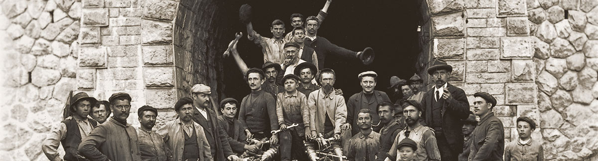

Storia del Trenino Rosso del Bernina
La linea del Bernina Express, attualmente dalla storia ultracentenaria e inserita dall’UNESCO come Patrimonio dell’Umanità, nacque nel 1881 a seguito della proposta di introdurre una ferrovia che si inerpicasse tra le intricate valli alpine al fine non soltanto di collegare i centri principali di queste zone, ma soprattutto di potenziare l’attività turistica che divenne poi il motore trainante dell’economia di molte valli.
Per gli antenati visionari il progetto era chiaro: la ferrovia del Bernina doveva servire, oltre che da collegamento logistico della Val Poschiavo e della Valtellina con l’Engadina e il nord dei Grigioni, anche da componente turistica. Il progetto doveva occuparsi di cercare un tracciato economico ma sicuro che riuscisse a far emergere il carattere turistico della ferrovia, rendendo visibile dal treno le molteplici bellezze della zona (fra cui il massiccio del Bernina, il Lago Bianco, il ghiacciaio di Palù e i mulini di pietra di Cavaglia) nel modo più economico possibile, in quanto questi numerosi gioielli si susseguono lungo il ripido itinerario, da nord a sud, in sole due ore di viaggio.
Fino alla fine del 1800 il Bernina, che da sempre ha rappresentato un asse nord-sud cruciale per il trasporto delle merci e per il traffico fra Italia e Svizzera, era percorso dalle corriere che sfidavano le intemperie selvagge del passo e molto spesso, d’inverno, erano costrette a fermarsi perché la valicata era troppo pericolosa o impraticabile.
Storia Bernina Express: l’inizio del progetto
Le vivaci relazioni amichevoli e commerciali tra i Grigioni e la Valtellina resero necessario lo sviluppo di un metodo alternativo di trasporto lungo il passo del Bernina: più rapido e moderno; in effetti, per percorrere il collegamento tra Samedan e Tirano una diligenza a cavallo impiegava ben nove ore. Fu il progresso tecnico, ovvero la scoperta dell’energia a trazione elettrica per la ferrovia, a permettere la nascita della linea del Bernina Express; infatti l’ambizioso progetto della linea del Bernina poté prendere forma esclusivamente grazie alla costruzione della centrale elettrica di Brusio. La tratta ferroviaria del Bernina Express, che sarebbe stata inglobata dopo pochi anni dalla Ferrovia Retica, avrebbe potuto così viaggiare sin dal primo giorno con l’energia rinnovabile del Lago Bianco. Nella concessione per la linea del Bernina è inoltre formulata espressamente, ancora oggi, la condizione di fornire l’energia elettrica a condizioni convenienti per il funzionamento dell’intera ferrovia.
Nel dicembre 1899 la ditta inglese General Water Power Limited ottenne dal governo elvetico la concessione per la costruzione della Ferrovia del Bernina, ma fu solo nel 1902, con l’apertura del tronco ferroviario Sondrio-Tirano, che iniziò a concretizzarsi l’idea di una ferrovia che da Saint Moritz arrivasse a Tirano, oltre alla possibilità di collegarsi con l’intera rete italiana e, più in generale, europea. Nel 1905 venne indetto un referendum che coinvolse le cittadine di Brusio, Poschiavo, Pontresina e Saint Moritz, al fine di chiedere il favore o meno all’opera da parte dei cittadini direttamente interessati. Con un consenso quasi unanime da parte dei votanti, il nuovo progetto venne presentato nell’inverno del 1905 e approvato dal Governo Centrale il 2 marzo 1906. Solo due mesi dopo, i lavori per il Bernina Express vennero inaugurati (1 maggio 1906) e in quegli anni la regione compresa tra Tirano e Saint Moritz si trasformò in un grande cantiere e lungo la linea sorsero ovunque baracche per operai.
Nella progettazione del lato nord della linea del Bernina Express, la prima ad essere realizzata, gli ingegneri non incontrarono grandi difficoltà fino all’Alp Grum. Uniche eccezioni furono il gradino di Montebello, tra Morteratsch e Bernina Suot, superabile con un tornante, e il percorso tra Pontresina e Surovas che richiedeva la realizzazione di un percorso tortuoso e con forti pendenze fino al 70‰. Dopo l’inaugurazione delle tratte Pontresina-Morteratsch e Poschiavo-Tirano nel luglio del 1908, il mese successivo seguirono l’apertura della Celerina Staz-Pontresina e della Morteratsch-Bernina Suot. Si dovette attendere l’anno successivo, nel luglio del 1909, per vedere realizzate le tratte St.Moritz-Celerina Staz e Bernina Suot-Ospizio Bernina, che andarono a completare la prima tratta tra Saint Moritz e il Passo del Bernina, il culmine della linea.
Contrariamente al lato nord, il versante sud del passo del Bernina creò notevoli problemi ai costruttori che dovettero superare un dislivello di 1200 metri su una distanza orizzontale di meno di 8 chilometri. Si dovette tracciare una linea che garantisse la massima sicurezza rispettando però la pendenza massima del 70‰ e un raggio minimo di 45 metri. A questo scopo tra Alp Grum e Poschiavo si impose la costruzione di nove gallerie, diversi ponti in pietra e tre viadotti con parapetto, mentre tra Miralago e Tirano, presso la stazione di Brusio, si dovette costruire uno dei simboli odierni del trenino rosso del Bernina, un doppio tornante e il suo viadotto elicoidale.
I lavori vennero completati, nonostante il freddo, le difficoltà e gli incidenti sul lavoro, il 5 luglio 1910, permettendo così l’apertura di tutta la linea. Lunga circa 60 km e una pendenza del 70‰, integralmente ad aderenza naturale ed alimentata a 1000V in corrente continua, il servizio del Bernina Express era garantito da un gruppo di 17 elettromotrici costruite dalla Alioth di Munchenstein. Pur essendo stata concepita come ferrovia turistica con linee in funzione solo durante il periodo estivo, già durante la costruzione della tratta ferroviaria del Bernina Express si cercò di evitare i canaloni che nella stagione invernale a causa di valanghe provocavano distruzione delle linee aeree e danneggiamento dei binari.
Storia Bernina Express: un treno di fama mondialea
Già nel 1912 la nuova ferrovia aveva acquistato un’incredibile fama internazionale, infatti un ingegnere giapponese di nome Handa visitò la Svizzera proprio alla ricerca di un riferimento per la costruzione di una ferrovia nelle vicinanze di Tokyo, alle pendici del Monte Fuji. Tale opera ingegneristica venne effettivamente realizzata secondo lo steso principio della ferrovia del Bernina e inaugurata nel 1919.
Storia Bernina Express: in servizio tutto l’anno e un periodo di declino
Sempre nel 1912 in previsione dell’attivazione di un servizio anche durante il periodo invernale del Bernina Express, su pressione degli alberghi dell’Engadina e grazie alle loro sovvenzioni, la società ferroviaria ordinò due imponenti spazzaneve rotativi a vapore. Questo imponente investimento si rivelò necessario, così da evitare (come accadeva spesso nei primi anni di funzionamento invernale) che i viaggiatori, una volta arrivati ad Ospizio Bernina dovessero percorrere un pezzo in slittino o che, quando successivamente la tratta ferroviaria fu estesa fino ad Alp Grüm, i passeggeri dovessero essere portati fino a Cavaglia, lungo l’antica mulattiera, dove li attendeva il treno di collegamento; inoltre permise di evitare che il personale impegnato lungo la tratta dovesse spazzare via la neve a mano.
Gli impianti della ferrovia però non erano adeguati all’utilizzo di spazzaneve così enormi, per cui si rese necessaria la costruzione di piattaforme girevoli in parte coperte, per consentire l’inversione del senso di marcia. Le stesse sono ancora presenti ed utilizzate, in occasione di grandi nevicate, presso le stazioni di Pontresina e Ospizio Bernina, mentre sono state eliminate quelle di Bernina Suot, Alp Grüm, Cavaglia e Poschiavo.
Fu solo nel 1913 che la Ferrovia del Bernina Express entrò in funzione
su
tutta la linea, da nord a sud, anche nei mesi invernali quando parecchi metri di
neve
ricoprivano i punti più alti del tragitto. Dopo i primi periodi di funzionamento, per
garantire una maggiore sicurezza da slavine e depositi nevosi, vennero realizzate alcune
modifiche al percorso: la curva della “Scala” tra Alp Grüm e Ospizio Bernina venne
sostituita con una linea diretta sistemata su un terrapieno, furono corrette delle curve
presso
Nel periodo della Prima Guerra Mondiale, a causa dei combattimenti, si determinò un grave crollo nel numero dei passeggeri che arrecò numerose difficoltà a questa piccola ferrovia alpina. Questa situazione di estremo disagio durò fino al 1 gennaio 1942 quando la Ferrovia del Bernina entrò a far parte della Ferrovia Retica.
Storia Bernina Express: il nuovo millennio, il centenario e l’UNESCO
Potenziata negli anni la dotazione del parco mezzi, grazie all’acquisto di nuove elettromotrici più potenti e moderne, con l’arrivo del nuovo millennio la linea del Bernina Express ha visto migliorare notevolmente la sua offerta commerciale con servizi sempre più specializzati e volti a sfruttare la sua vocazione turistica, migliorandone il confort di viaggio. Nel 2000 infatti sono entrate in servizio le nuove carrozze panoramiche costruite dalla Stadler Altenrhein, su disegno Pininfarina, con una capacità di 34 posti nella classe superiore e 44 nella seconda.
Negli anni il Bernina Express non hai smesso di percorrere i 61 km e, man mano, ha perso sempre più “clienti locali” a favore di turisti italiani e internazionali. Mentre un tempo era l’unico mezzo per valicare il passo, oggi i valposchiavini non lo usano praticamente più in quanto troppo lento… infatti a 30 km orari ci vogliono due ore per valicare il Bernina, quando in macchina bastano 45 minuti. L’attaccamento della popolazione alla “loro” ferrovia non è però diminuito, anzi probabilmente è andato crescendo (assieme all’orgoglio) da quando il 7 luglio 2008 è stata insignita del titolo di Patrimonio Mondiale dell’Umanità dall’UNESCO.
Dal luglio 2008, con l’ottenimento di questo prestigioso riconoscimento, la ferrovia Retica e la stazione svizzera di Tirano sono entrate definitivamente nella storia: la ferrovia più alta d’Europa che unisce Tirano e Saint Moritz vede riconosciuta la sua eccezionale valenza turistica.
Nel 2010 la linea del Bernina ha compiuto cento anni: i festeggiamenti sono durati un anno intero, lungo i 61 chilometri di binari e in tutte e quattro le stagioni, da Val Poschiavo alla Valtellina sino all’Alta Engadina. La linea ferroviaria ad adesione più ripida d’Europa e che porta il nome della cima più elevata dei Grigioni, il Piz Bernina, non ha perso nulla del suo fascino dall’entrata in funzione nel 1910. Al contrario! Grazie al Bernina Express, rinomato in tutto il mondo, e al riconoscimento come Patrimonio Mondiale Unesco, rappresenta oggi una delle esperienze ferroviarie più ambite.